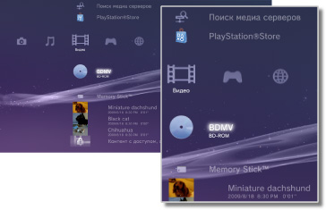

Видео > Категория "Видео"
Категория "Видео"
Следующие значки отображаются в категории  (Видео). Набор значков может быть различным в зависимости от условий использования.
(Видео). Набор значков может быть различным в зависимости от условий использования.

 |
Утилита управления данными BD | Сохранение административных данных, используемых дисками Blu-ray Disc™ (BD). |
|---|---|---|
 |
Поиск медиа серверов | Запуск поиска мультимедийных серверов DLNA, подключенных в той же сети. |
 |
Медиа сервер | Подключение к мультимедийным серверам DLNA и воспроизведение хранимых на серверах видеофайлов. Отображаемый значок зависит от типа сервера. |
 |
Редактор и загрузчик видеоматериалов | Редактирование видеоматериалов, хранящихся на системном накопителе системы PS3™. |
 |
BD-ROM / BD-R / BD-RE | Воспроизведение Blu-ray Disc (BD). |
 |
DVD-ROM / DVD-R / DVD+R / DVD-RW / DVD+RW | Воспроизведение диска DVD или AVCHD. |
 |
Диск с данными | Воспроизведение видеофайлов, сохраненных на совместимом дисковом носителе, например, на диске CD-R или DVD-R. |
 |
Memory Stick™ | Воспроизведение видеофайлов, сохраненных на Memory Stick™.* |
 |
SD Memory Card | Воспроизведение видеофайлов, сохраненных на SD Memory Card.* |
 |
CompactFlash® | Воспроизведение видеофайлов, сохраненных на CompactFlash®.* |
 |
PSP™ (PlayStation®Portable) | Воспроизведение видеофайлов, сохраненных на карте Memory Stick™ в системе PSP™. |
 |
PSP™ (PlayStation®Portable) | Воспроизведение видеофайлов, сохраненных в памяти системы PSP™go. |
 |
Цифровая камера | Воспроизведение видеофайлов, сохраненных на цифровой камере, совместимой с системой PS3™. |
 |
WALKMAN® / ATRAC Audio Device(WALKMAN®) | Воспроизведение видеофайлов, сохраненных в WALKMAN®/ATRAC Audio Device (WALKMAN®). |
 |
ATRAC Audio Device | Воспроизведение видеофайлов, сохраненных в ATRAC Audio Device. |
 |
Устройство USB | Воспроизведение видеофайлов, сохраненных на устройстве-накопителе USB. |
 |
Изображения с цифровой видеокамеры | Воспроизведение видеофайлов, сохраненных в папке DCIM носителя. |
|
(папка) | Этот значок отображается для папок, которые были созданы на носителе с помощью компьютера. |
 |
(Файлы, сохраненные на системном накопителе) | Воспроизведение видеофайлов, сохраненных на системном накопителе системы PS3™. Отображаются эскизы изображений. |
| (Данные, загруженные на системный накопитель) | Этот значок отображается для видеофайлов, загруженных на системный накопитель. При запуске загружаются данные, и можно будет воспроизвести видеофайл. |
| * |
При использовании носителя с некоторыми моделями требуется соответствующий адаптер USB (не входит в комплект поставки). При использовании вместе с адаптером USB носитель будет отображаться как |
|---|
 (Устройство USB).
(Устройство USB).Подсказки
- Продажа и прокат видеоматериалов из PlayStation®Store для системы PS3™ прекращены.
- Подробнее о стандарте DLNA см. раздел
 (Настройки) >
(Настройки) >  (Настройки сети) > [Подключение к медиа серверу] в настоящем руководстве.
(Настройки сети) > [Подключение к медиа серверу] в настоящем руководстве. - Для воспроизведения с дисков Blu-ray Disc защищенных от копирования материалов с разрешением 1080p используйте кабель HDMI для подключения системы к устройству, совместимому со стандартом HDCP (High-bandwidth Digital Content Protection).
- Для некоторых типов видеофайлов с защитой от нарушения авторских прав воспроизведение эскизов невозможно.
- При воспроизведении диска BD, содержащего контент с ограничениями родительского контроля, воспроизведение будет ограничено в соответствии с уровнем родительского контроля, установленным в системе PS3™. Уровень родительского контроля диска BD можно настроить в разделе (Настройки) >
 (Настройки безопасности).
(Настройки безопасности). - Для воспроизведения диска DVD, содержащего контент с ограничениями родительского контроля, может потребоваться пароль. Пароль можно задать в разделе (Настройки) > (Настройки безопасности).
- Содержимое с ограничениями, наложенными родительским контролем, отображается как
 . Пользователь может включить воспроизведение такого содержимого, введя пароль из 4-х цифр.Пароль можно задать или изменить в меню (Настройки) > (Настройки безопасности).
. Пользователь может включить воспроизведение такого содержимого, введя пароль из 4-х цифр.Пароль можно задать или изменить в меню (Настройки) > (Настройки безопасности). - Заблокированные диски BD отмечаются значком
 . Для воспроизведения контента, содержащегося на таких дисках, введите пароль, установленный изготовителем диска.
. Для воспроизведения контента, содержащегося на таких дисках, введите пароль, установленный изготовителем диска. - В редких случаях диски и другие носители могут работать неправильно при воспроизведении в системе PS3™. В основном это происходит из-за различий в процессе производства или в кодировке программы.
- Если устройство, не соответствующее стандарту HDCP (High-bandwidth Digital Content Protection), подключается к системе с помощью кабеля HDMI, система не может выполнять вывод видео и/или аудио.
Просмотр 3D-материалов
Телевизор с поддержкой стереоизображения 3D, соответствующий стандарту 3D, и высокоскоростной кабель HDMI необходимы для просмотра стереоскопических 3D-материалов.
Подсказки
- В некоторых случаях при воспроизведении Blu-ray 3D™-материалов определенные элементы, такие как меню и субтитры, могут отображаться в 3D системы PS3™ иначе, чем в других воспроизводящих устройствах.
- В некоторых случаях определенные функции BD-J могут не воспроизводиться в 3D или работать неправильно в системе PS3™.
- Вывод звука в формате Dolby TrueHD при воспроизведении материалов Blu-ray 3D™ не поддерживается. Используется формат Dolby Digital.
Локальный накопитель Blu-ray Disc (BD)
Если при воспроизведении диска BD появится сообщение о том, что на локальном накопителе недостаточно свободного пространства, удалите с системного накопителя ненужные файлы.
Локальный накопитель - это область хранения данных, определяемая профилем BD-ROM стандарта 1.1 / 2.0. Эти данные хранятся на системном накопителе системы PS3™.